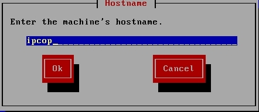
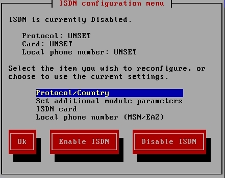
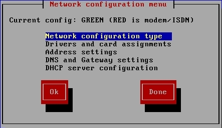
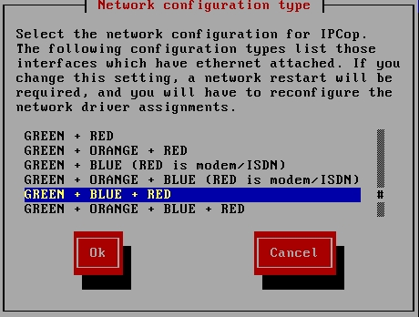
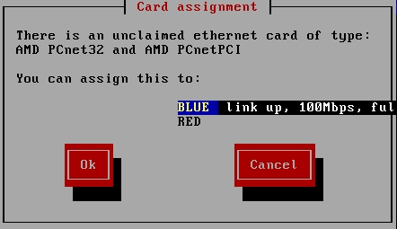
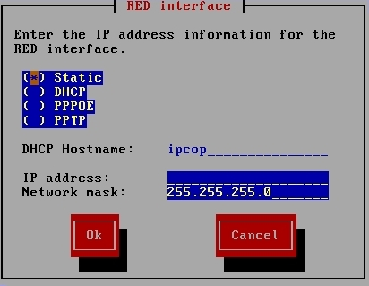
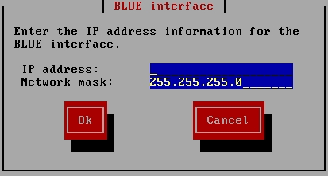
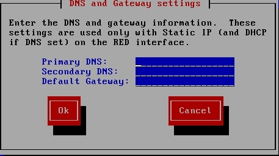
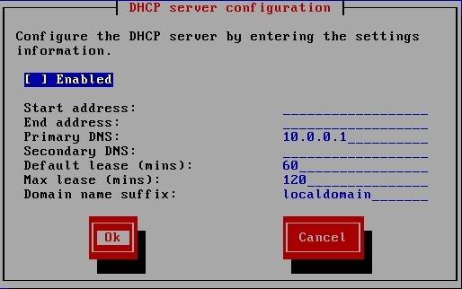
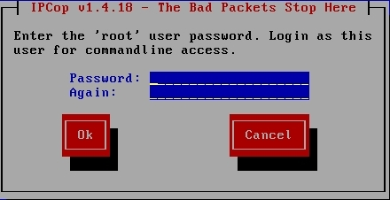

Configure IPCop Without Wireless
- First you will be asked to enter your type of keyboard. Select US and hit
Enter
- Next it will ask you for your time zone, select America/New_York and hit
Enter
- Next it will ask you to enter the machine's hostname. By default it has
the word ipcop as the hostname. We will leave it as ipcop so just hit OK.

- Next it will ask you to enter the domain name. By default the domain name
is "localdomain". Leave the default as it is and hit OK.
- The ISDN configuration menu will pop up. We do not use ISDN so select
Disable ISDN.

- Now the network configuration menu shows up and there is a lot of important
options in this menu. First select Network configuration type.

- We want to use a GREEN(the internal network we talked about in the last
lesson), BLUE(internal wireless network), and RED(which is the outside
network). Select GREEN + BLUE + RED and hit OK.

- Now select Drivers and card assignments from the Network configuration
menu.
- Earlier, IPCop automatically detected the NIC for the GREEN interface but
the NIC for the RED and BLUE interfaces are still undetermined. It will ask
you if you wish to change the current settings. Hit OK.
- IPCop will find an available driver and give you the option to assign it
to the RED or BLUE interface. Select the correct interface that goes with that
driver and hit OK.

Then it will find the other available driver and give you
the option to assign it to the remaining interface. Hit OK.

- You will then get a success screen saying all the cards have been assigned
- At the Network configuration menu select Address settings and then select
the RED interface.
- Because the RED interface is the outside network, the IP address is set by
DHCP so select DHCP from the list of options and hit OK.

- Back at the address settings screen select the BLUE interface.
- Because the BLUE interface is the wireless internal network, we are going
to give it a non-routable IP address. Enter 192.0.0.1 for the IP address and
the network mask should be already entered but if it's not enter
255.255.255.0 and hit OK.

- Back at the address settings screen select Done.
- At the Network configuration menu select DNS and Gateway settings
- For Primary DNS enter 158.59.255.10. For the Secondary DNS enter
158.59.255.11. For Default Gateway enter 192.168.217.1 and hit OK.

- Back at the Network configuration screen select Done.
- At DHCP Server Configuration page don't change anything just hit OK.

- Enter the password for root (NOTE it does not display the text you are
typing; just type the first line then move down and type the second line and
hit OK)

- Enter the password for admin
- Enter the password for backup
- Setup is Complete
- Now you have to use an Ethernet cable to connect your wireless access
point to the network card you assigned to the BLUE interface. Also plug the
wireless access point into a power source and turn it on. You are now ready to
use your wireless network.